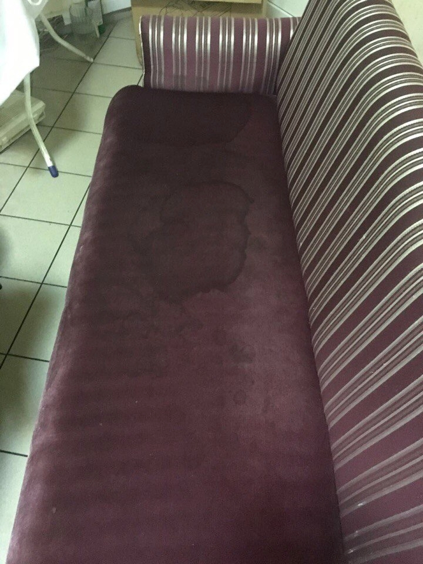
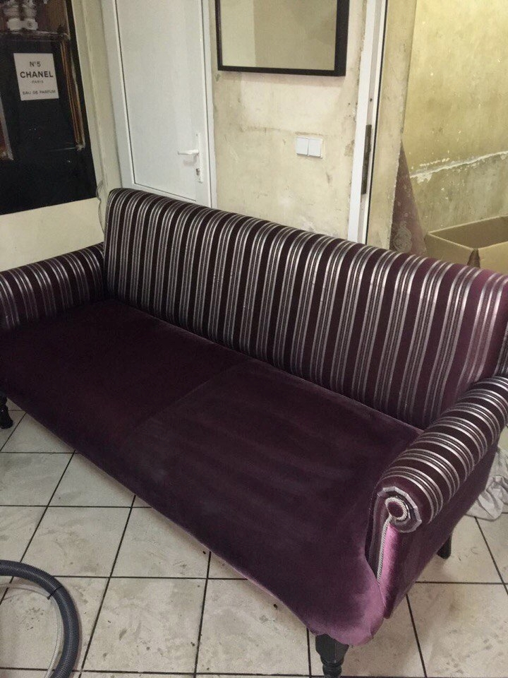

<div class="tile__item tile__item-grey">
  <div class="tile__item-title uk-h2"><span>Примеры работ</span></div>
  
  <div class="examples-slider slider">
    <div class="slider-block">
      <div class="slide-item">
        
        <div class="uk-grid uk-grid-collapse">
          <div class="uk-width-1-2 uk-width-medium-3-10">
            <!-- Изображения должны быть больше 300px в ширину и высоту, а также квадратного соотношения -->
            <div class="examples-slider__compare examples-slider__before">
              <a class="lightbox round-img" href="../images/media/work-example-01.jpg" data-uk-lightbox="{group: 'work-example'}">
                
              </a>
            </div><!-- end examples-slider__before -->
          </div><!-- end column -->
          <div class="uk-width-1-2 uk-width-medium-3-10 examples-slider__push">
            <div class="examples-slider__compare examples-slider__after">
              <a class="lightbox round-img" href="../images/media/work-example-02.jpg" data-uk-lightbox="{group: 'work-example'}">
                
              </a>
            </div><!-- end examples-slider__after -->
          </div><!-- end column -->
          <div class="uk-width-medium-4-10 examples-slider__pull">
            
            <div class="examples-slider__content">
              <div class="examples-slider__content-title">Химчистка мебели</div>

              <div class="truncate-text" truncate-row="3">
                Удаление застаревших<br>пятен с мягкой мебели при помощи чего-то там.
              </div>

              <a class="underline" href=""><span class="underline__item">Подробнее</span></a>
            </div><!-- end examples-slider__content -->
          </div><!-- end column -->
        </div><!-- end grid -->
      </div><!-- end slide-item -->
      
      <div class="slide-item">
        
        <div class="uk-grid uk-grid-collapse">
          <div class="uk-width-1-2 uk-width-medium-3-10">
            <!-- Изображения должны быть больше 300px в ширину и высоту, а также квадратного соотношения -->
            <div class="examples-slider__compare examples-slider__before">
              <a class="lightbox round-img" href="../images/media/work-example-01.jpg" data-uk-lightbox="{group: 'work-example'}">
                
              </a>
            </div><!-- end examples-slider__before -->
          </div><!-- end column -->
          <div class="uk-width-1-2 uk-width-medium-3-10 examples-slider__push">
            <div class="examples-slider__compare examples-slider__after">
              <a class="lightbox round-img" href="../images/media/work-example-02.jpg" data-uk-lightbox="{group: 'work-example'}">
                
              </a>
            </div><!-- end examples-slider__after -->
          </div><!-- end column -->
          <div class="uk-width-medium-4-10 examples-slider__pull">
            
            <div class="examples-slider__content">
              <div class="examples-slider__content-title">Длинный текст текст в две строки</div>

              <div class="truncate-text" truncate-row="3">
                Длинный длинный текст длинный длинный текст длинный длинный текст длинный длинный текст
              </div>

              <a class="underline" href=""><span class="underline__item">Подробнее</span></a>
            </div><!-- end examples-slider__content -->
          </div><!-- end column -->
        </div><!-- end grid -->
      </div><!-- end slide-item -->
    </div><!-- end slider-block -->

    <div class="slider-dots"></div>
  </div><!-- end examples-slider -->
  <a href="/" class="btn grey-btn border-btn">Все работы</a>
</div><!-- end tile__item -->